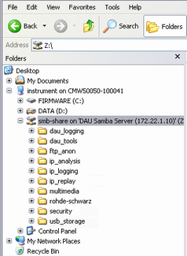

The internal system drive of the DAU can be used for file sharing. It provides a samba share for this purpose.
By default, the samba share is mapped to drive Z. You can access it via the Windows Explorer, either locally or from another host connected to the CMW internal subnet. The multimedia directory of the share can also be accessed via the WebDAV protocol, see "Accessing the samba share via WebDAV".

To change the drive letter, use the hotkey "Network Drive Map" of the "Data Application Control" dialog.
- dau_logging:
This directory contains log files for service purposes. They are intended for use by Rohde & Schwarz only.
It also contains files with encryption keys for IPsec. You can enter these keys in a network protocol analyzer, to analyze IP log files of encrypted connections, see "Configuring Wireshark for IPsec". - dau_tools:
Contains tools which can be installed on the DUT for data testing. The tools are also available on the web portal of the DAU. - ftp_anon:
Anonymous FTP users have write access to this directory (upload / delete). For the other directories, they have only read access (download). - ims:
This directory is used by the IMS server.
If you want to use the media endpoint PCAP, store metadata XML files in the directory ims/pcap.
Received file transfers are stored in the directory ims/rcs/received.
If you want to transfer files via MSRP or import message texts, store them in the directory ims/rcs/samples. - ip_analysis:
This directory can contain, for example, text files with lists of keywords. They can be imported to the IP connection security analysis application for a keyword search. - ip_logging:
This directory contains log files created via the "IP Logging" application, see "IP Logging Tab". You can delete, copy or rename these files. - ip_replay:
This directory is used by the "IP Replay" application, see "IP Replay Tab". If you want to replay packet capture files, store them in this directory. - multimedia:
If you add pages to the web portal of the DAU, the related files are stored in directory multimedia/web_server/user/web_pages.
Video files for streaming are stored in directory multimedia/streaming, see also "Streaming Videos from the Web Portal". - rohde-schwarz:
This directory contains internal configuration files and is for use by Rohde & Schwarz only. - security:
The ePDG of the DAU reads SSL certificates from the directory security/certificates/epdg. If you want to use certificates, store the related PEM files in this directory. - usb_storage:
If you connect an external USB drive to the USB DAU connector on the rear panel, the contents of the drive are shown in this folder.
The connector is only present if you have the DAU version R&S CMW-B450H.
The DAU supports the embedded IP services only. Installation and execution of user-specific applications on the DAU are not supported. If you need to use own IP services/applications, install them on a separate host, connect the host to the LAN DAU connector and configure the IP settings accordingly, see "IP Config Tab". |
The multimedia directory of the samba share can also be accessed via the WebDAV protocol (web-based distributed authoring and versioning). As address, enter the IP address of the DAU, followed by /webshare, e.g. 172.22.1.201/webshare.
The HTTP service of the DAU must be running, see "HTTP Tab".